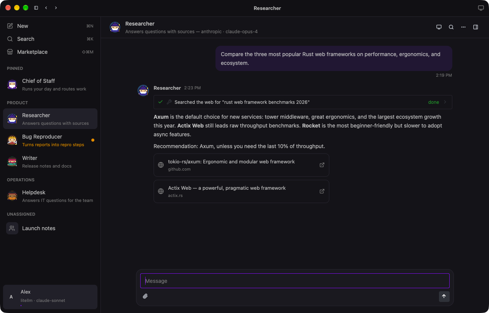
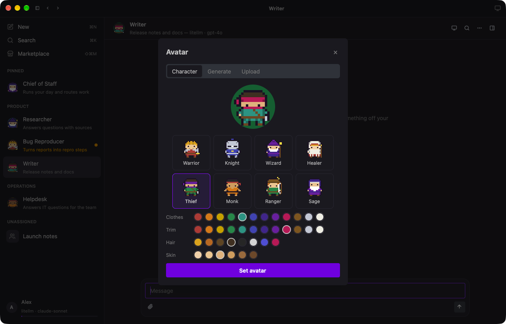
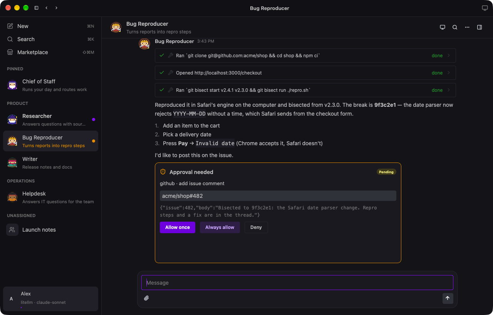
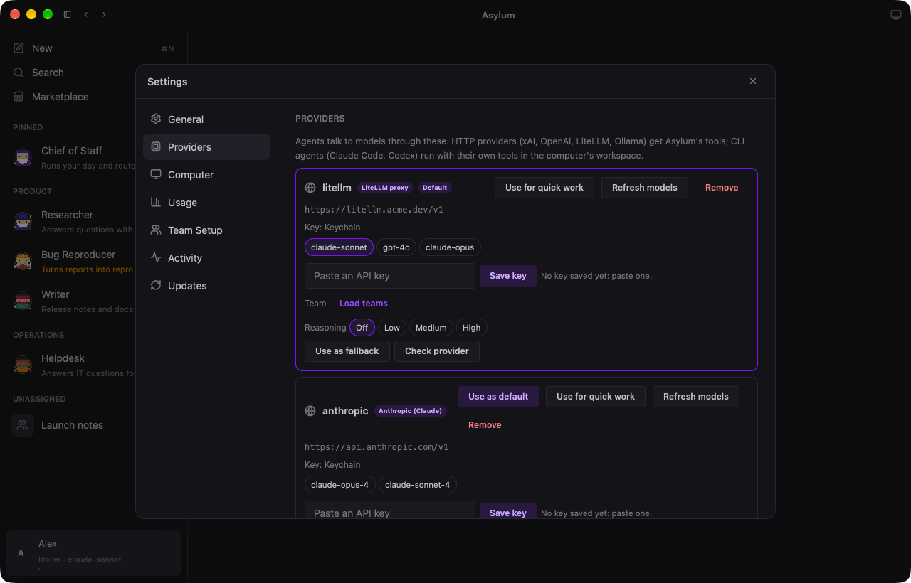
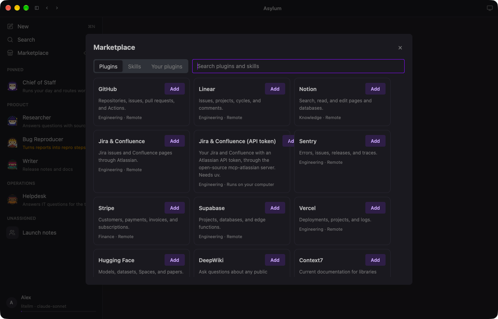

Their own computer
A shared workspace, a sandboxed shell, a terminal, and a browser with a screen per Agent. Watch live or take over.
Asylum gives every Agent a name, a job, memory, and a shared computer — a workspace, a browser that stays signed in, and a terminal. They work in your tools, run on a schedule, hand work to each other, and ask before anything that matters.
macOS 11 or later · works with local models, your API keys, or a LiteLLM gateway

Pick a class
Each Agent is a 16-bit sprite. Choose a class for each Agent and dress it in your colors. Agents you never customize still get a sprite of their own, the same on every screen.

Ask before acting
Agents run commands, drive a real browser, and use your connected tools on their own. Anything consequential — sending, posting, paying, deleting — stops for your approval, and Auto-review checks the rest against rules you write in plain language.

Any model
Every Agent can use its own provider and model, so your researcher runs Opus while your writer runs GPT through your company's LiteLLM gateway — in the same group chat. Paste a key and Asylum checks it, then keeps it in your Keychain.

Real tools
A Marketplace of connectors — GitHub, Linear, Jira and Confluence, Notion, Sentry, Google Workspace, Slack and more — with sign-in in your browser, several accounts per connector, and skills that know how to use them.

Everything a teammate needs
A shared workspace, a sandboxed shell, a terminal, and a browser with a screen per Agent. Watch live or take over.
Schedules in your timezone, intervals, webhooks, and events from Slack, GitHub, Linear, and Sentry.
Preferences, facts, and summaries that carry across conversations — and team memory for shared Agents.
Group chats with @mentions, handoffs between Agents, and Team Agents your teammates add by link or meet in Slack.
Open links and preview workspace pages, images, and PDFs right beside the conversation.
A managed policy for network controls, connectors, and locked rules — plus an audit log, export, OpenTelemetry, and an Admin API.
Free, open source, and running on your Mac in a few minutes. Start with a local model or paste a key.
git clone https://github.com/wess/asylum && cd asylum && cargo run -p app